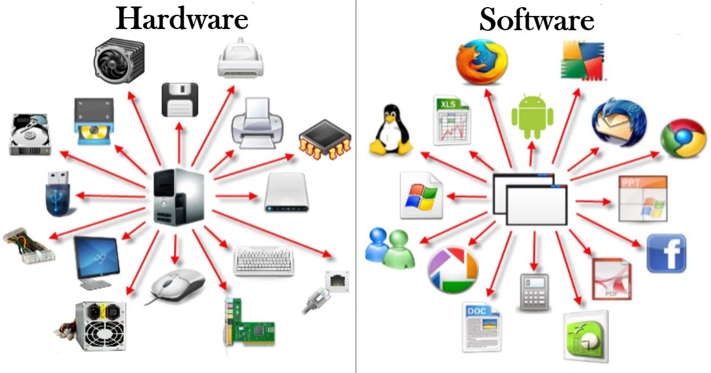
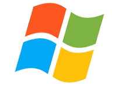
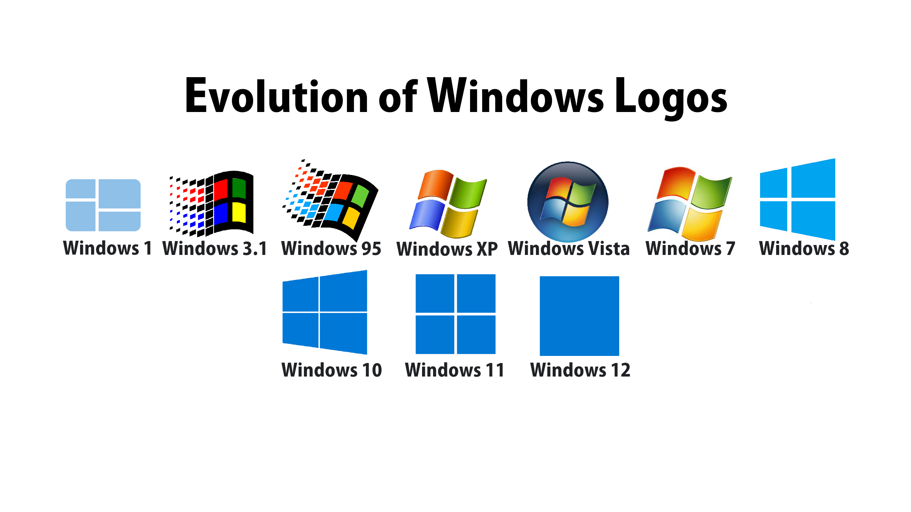

Entenda mais sobre o sistema operacinal que domina 78% do mercado
Historia do Windows
O Microsoft Windows foi lançado em 20 de novembro de 1985 como uma interface gráfica para o sistema MS-DOS, transformando-se no sistema operacional mais popular do mundo para computadores pessoais.
O que é e para que serve
O Windows é um software básico e indispensável que atua como intermediário entre os programas (softwares) e os componentes físicos (hardwares) do computador. Sem ele, a máquina não consegue executar tarefas ou interagir com o usuário.

Fundador do sistema operacional
Bill Gates nasceu em 28 de outubro de 1955, em Seattle, nos Estados Unidos. Em 1975, fundou a Microsoft com Paul Allen. A empresa desenvolveu sistemas e softwares que ajudaram a popularizar os computadores pessoais, especialmente com o MS-DOS e, posteriormente, o Windows. Gates liderou a Microsoft por muitos anos e se tornou uma das figuras mais conhecidas da indústria de tecnologia. Mais tarde, passou a dedicar grande parte de seu trabalho à filantropia por meio da Gates Foundation.
O logo do Windows é a marca visual da Microsoft que representa o seu famoso sistema operacional, simbolizando o conceito de "janelas" (do inglês windows)

Abaixo um video explicativo mais detalhado sobre o windows e sua historia e origem.

Espero que tenha entendido e se interressado pelo nosso conteúdo !